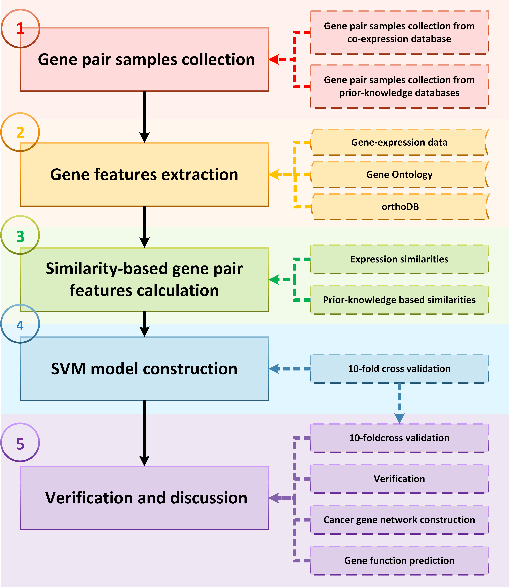
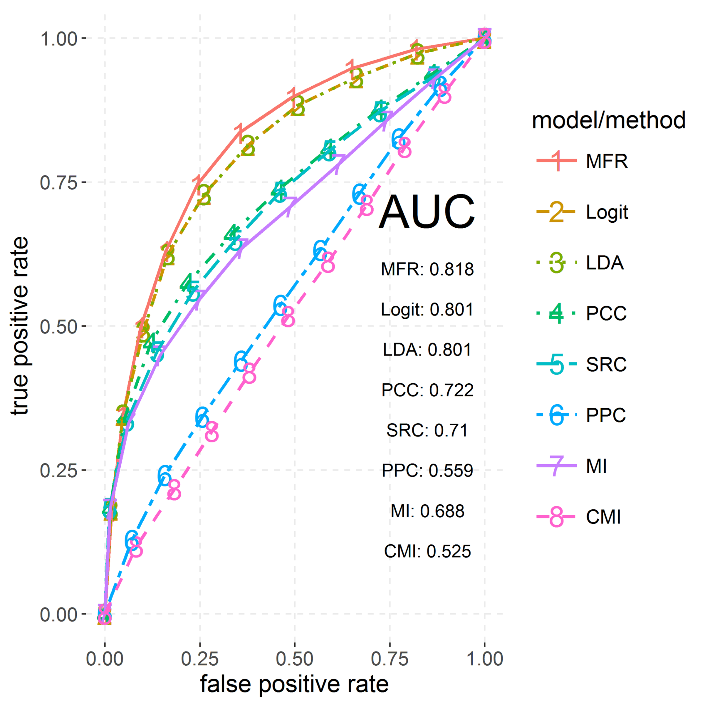
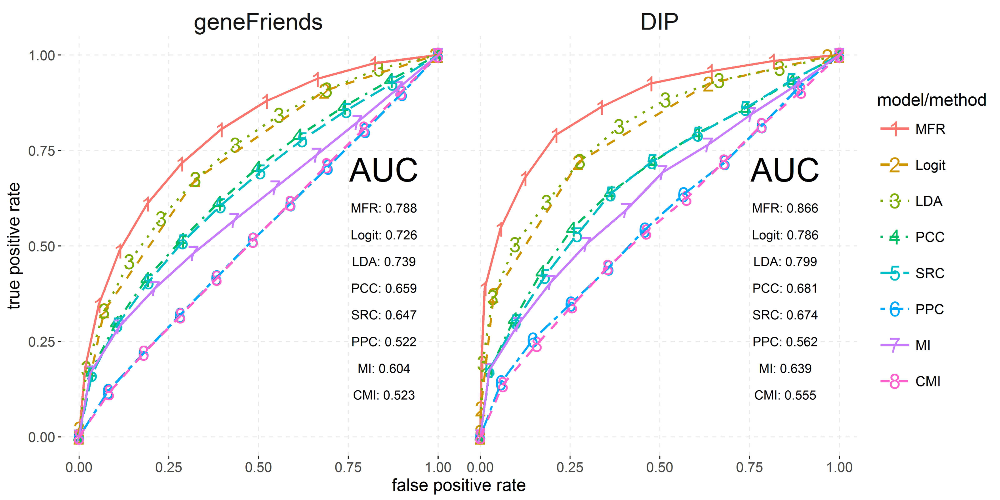
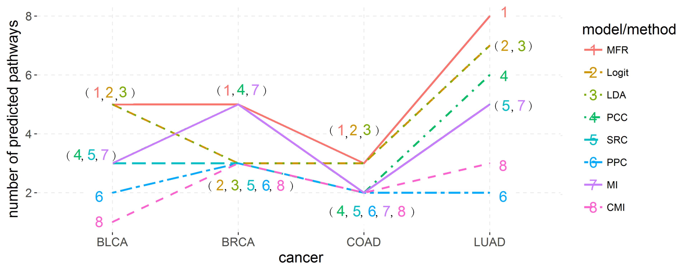
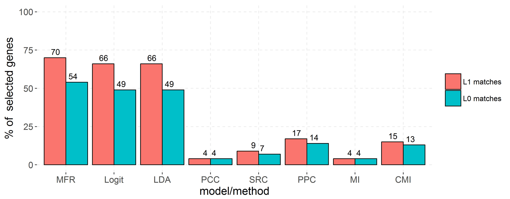

Intro
Measuring relatedness between a pair of genes under certain conditions is a fundamental technique and still a big challenge in computational biology. Traditionally, such relatedness can be assessed using co-expression similarities. However, they are known for high positive false rates, which severely impact the results of further computational analysis and biological interpretations. In addition, the other type of features, prior-knowledge based similarities, are only viable for measuring general relatedness, because the experiments where the prior knowledge is obtained are usually conducted in a common environment.
To solve the problem, we propose a novel machine learning model for accurately measuring relatedness between genes under given specific conditions, by organically combining expression similarities and prior-knowledge based similarities in a novel assessment criterion: Multi-Features Relatedness (MFR). Only gene pairs with both high expression similarities and high prior-knowledge based similarities will be kept and recommended by our model. Intuitively, this fits a multi-objective regression problem. We use SVM with linear kernel to effectively solve this regression problem, after transforming it to a single-objective generalized linear logit regression problem with the following hypotheses: (i) fitting of relatedness supported by expression similarities is equal to fitting of relatedness supported by prior-knowledge based similarities; (ii) all features contribute to fitting on the same level; and (iii) the fitting target relatedness are 0/1 (non-interacting/interacting).
Compared with other linear models (logist, LDA) and co-expression analysis methods (PPC, SRC, PPC, MI and CMI), the performance of MFR model significantly improve the precision, robustness, practicability of measuring relatedness of gene pairs under given certain conditions.
Workflow
The whole workflow of MFR model has five major steps (see Figure 1), including (i) gene pair samples collection from three different databases and a benchmark dataset of a published study; (ii) gene features extraction from three databases for assessing similarity-based gene pair features; (iii) totally 12 similarity-based gene pair features calculation using four gene features and two databases; (iv) SVM-based model construction in a 10-fold cross validation, where our model was trained and tested repeatedly in 10 times; and (v) application of the trained model to detect gene-gene interactions in verification datasets, construct cancer gene network, and predict gene function. The results were compared with other linear models and co-expression analysis methods.

Figure 1. workflow of MFR model
Results
MFR model is applied to predict gene-gene interactions extracted from the COXPRESdb, KEGG and TRRUST databases and the dataset of Pan et al.'s study in a 10-fold cross validation (see Figure 2), and to identify gene-gene interactions collected from the geneFirends and DIP databases in verification (see Figure 3). The results show that, compared with other linear models and co-expression analysis methods, the performance of MFR model significantly improve the precision and robustness of measuring relatedness between genes. In terms of cancer gene network construction (see Figure 4) and gene function prediction (see Figure 5), MFR model also obtains the results with more biological significances and accuracies than other compared models and methods.

Fig 2. ROCs of three linear models and five co-expression analysis methods for identifying gene-gene interactions by 10-fold cross validation

Fig 3. ROCs of three linear models and five co-expression analysis methods for identifying gene-gene interactions in the verification datasets

Fig 4. Number of pathways predicted to be directly influenced by increased glutamine and glutamate metabolism in four cancer types. These pathways were predicted in cancer gene networks, where nodes represent up-regulated genes and edges represent relatedness between genes, measured by three linear models and five co-expression analysis methods

Fig 5. Percentages of L0- and L1- matched selected genes in eight KEGG metabolic gene networks. In these networks, nodes represent genes involved into KEGG metabolic pathways and edges represent relatedness between genes, measured by three linear models and five co-expression analysis methods.